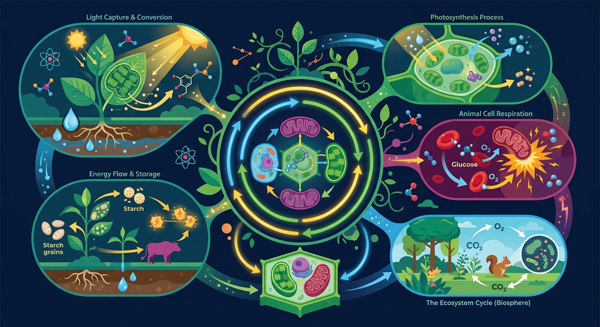
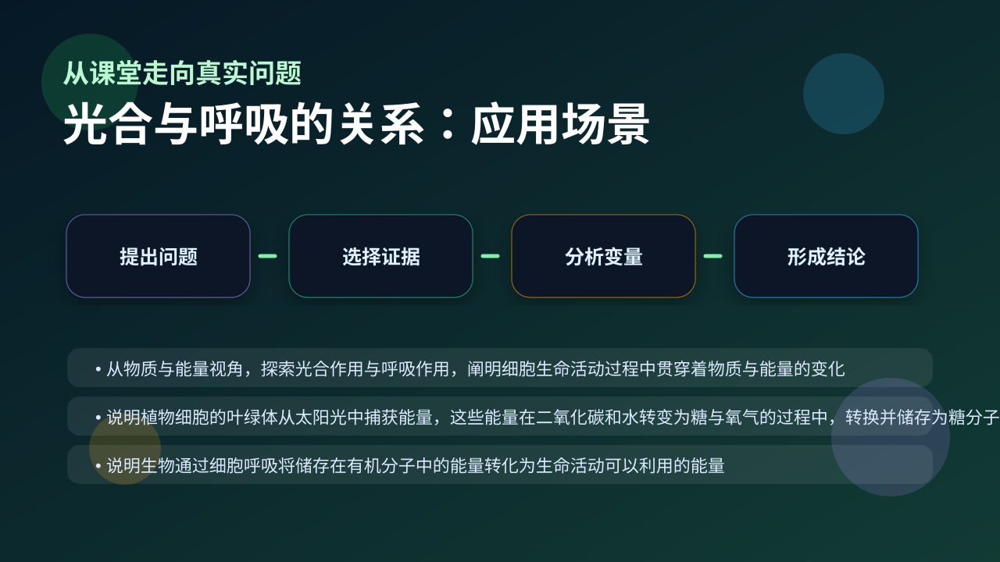

Gallery v1.0.0 · skill v7.14
物质和能量怎样在细胞里被转换，并最终支持生命活动？

已经知道：学生已掌握光合作用（叶绿体吸收CO2释放O2）和呼吸作用（线粒体消耗O2释放CO2）的独立过程，能区分光反应与暗反应阶段（此前生物）
但问题是：面对植物全天气体交换动态变化时，常混淆净光合与总光合概念，难以理解光照突变时CO2吸收曲线为何出现拐点（补偿点现象）
所以学：当农技员分析大棚作物‘午休现象’（正午光合下降）时，需要同时计算呼吸消耗量并调整CO2浓度，这正是本课要解决的典型生产问题
先选一个卡点。后面的例子、互动和 AI 学伴都会围绕它给你最小提示。
选择或输入后，本课会围绕你的问题展开。
下列哪个过程会直接消耗光合作用产生的氧气？
现象入口：植物白天既进行光合作用也进行呼吸作用，夜间只剩呼吸作用，气体交换方向会改变。
机制解释：光合作用合成有机物并储存能量，呼吸作用分解有机物并释放能量；两者在物质和能量上相互联系但不是简单相反。
证据抓手：证据来自净光合速率、补偿点、饱和点、二氧化碳吸收释放曲线。
变量线索：光照强度、二氧化碳浓度、温度和呼吸强度。做题时先找变量，再判断机制，最后写证据。
观察植物在光补偿点时气泡产生与消失的动态平衡
分析光照强度对叶绿体ATP合成与线粒体CO₂释放的影响
阐明光补偿点处O₂净释放为零是因光合产O₂=呼吸耗O₂
应用光补偿点原理解释阴天生菜生长缓慢的原因
情境：当光照低于补偿点时，植物整体表现为释放二氧化碳，因为呼吸大于光合。
作答路径：当光照低于补偿点时，植物整体释放CO₂（现象），因呼吸作用分解有机物产生的CO₂量超过光合作用吸收量（机制），可通过黑暗条件下测得呼吸速率＞弱光下净光合速率为证（证据）
评分提醒：典型失分：将净光合直接等同真光合；未区分光补偿点与饱和点的生理意义；分析有机物积累时忽略呼吸消耗
旋转 3D 分子模型，观察结构层级。请把结构特点和 光合与呼吸的关系 中的功能解释对应起来：结构不是装饰，而是功能的证据。
💡 操作提示：拖拽旋转模型，思考“形状、空间位置、结合位点”如何影响生命活动。
绿线是真光合（随光强饱和），蓝线是呼吸消耗（恒定）。真光合减呼吸才是净光合，交点即光补偿点。
💡 探究任务：调呼吸强度，看光补偿点如何移动，解释为什么阴生植物的补偿点比阳生植物低。
认为“白天只光合、晚上只呼吸”，忽略白天呼吸也持续进行。
只说“增加/减少”不够，要写清改变的是 光照强度、二氧化碳浓度、温度和呼吸强度 中的哪一个。
没有实验现象、曲线趋势或结构证据，答案就像猜测。
关于有机物积累的表述正确的是？
视频用语音和动态画面回顾本课主线：问题情境 → 机制模型 → 证据判断 → 迁移应用。

解释大棚夜间降温、合理密植和作物增产，要同时看光合和呼吸。
提交后会检查你的解释是否包含现象、机制和变量。
如果学生只说出概念名称，继续追问：题干里哪个证据最关键？这个证据对应分子、细胞、个体还是生态系统层级？如果改变 光照强度、二氧化碳浓度、温度和呼吸强度 中的一个条件，结果会怎样？这三问能把答案从背诵推进到科学解释。
写出光合与呼吸在物质交换上的两个依赖关系
分析夏季正午植物气孔关闭时，净光合下降的生理原因
设计实验验证温度对光补偿点的影响，指出关键观测指标
密闭温室中测得某植物24小时CO₂净吸收量为零，说明
学习小结：光合与呼吸通过有机物和气体交换相互依存：光合储能需呼吸供能启动，呼吸底物依赖光合产物，净光合反映有机物积累量
先独立作答，再点选项查看对错与错因。
右图是植物在不同光照强度下的气体交换示意图，当光照强度达到补偿点时
密闭透明容器中的植物在持续光照下，容器内O2浓度变化曲线最可能是
夏季正午植物可能出现"午休现象"的根本原因是
光合作用的光反应为暗反应提供____和____
答案：ATP、[H]
光反应产物是O2、ATP和[H]
将植物突然移至黑暗环境，短时间内C3含量会____，C5含量会____
答案：增加、减少
黑暗导致[H]和ATP减少，C3还原受阻
设计实验比较不同每日光照时长(4h/8h/12h)下植物的生长状况
❓ 为啥植物白天光合晚上呼吸，它不累吗？
❓ 光合和呼吸到底谁给谁打工？
❓ 考试老考ATP和[H]，它们咋流转的？
学完这一课，这些问题你都能自信地回答。
✅ 呼吸作用时刻进行，光合作用才需光
💡 将植物作息与人类活动简单类比
✅ 光合[H]特指NADPH，呼吸[H]是NADH/FADH2
💡 教材缩写符号的歧义性
口诀：光合造粮呼吸耗，白天黑夜轮班倒，ATP是硬通货，两头跑
类比：像银行存钱取钱：光合是存款（储能），呼吸是取款（耗能）